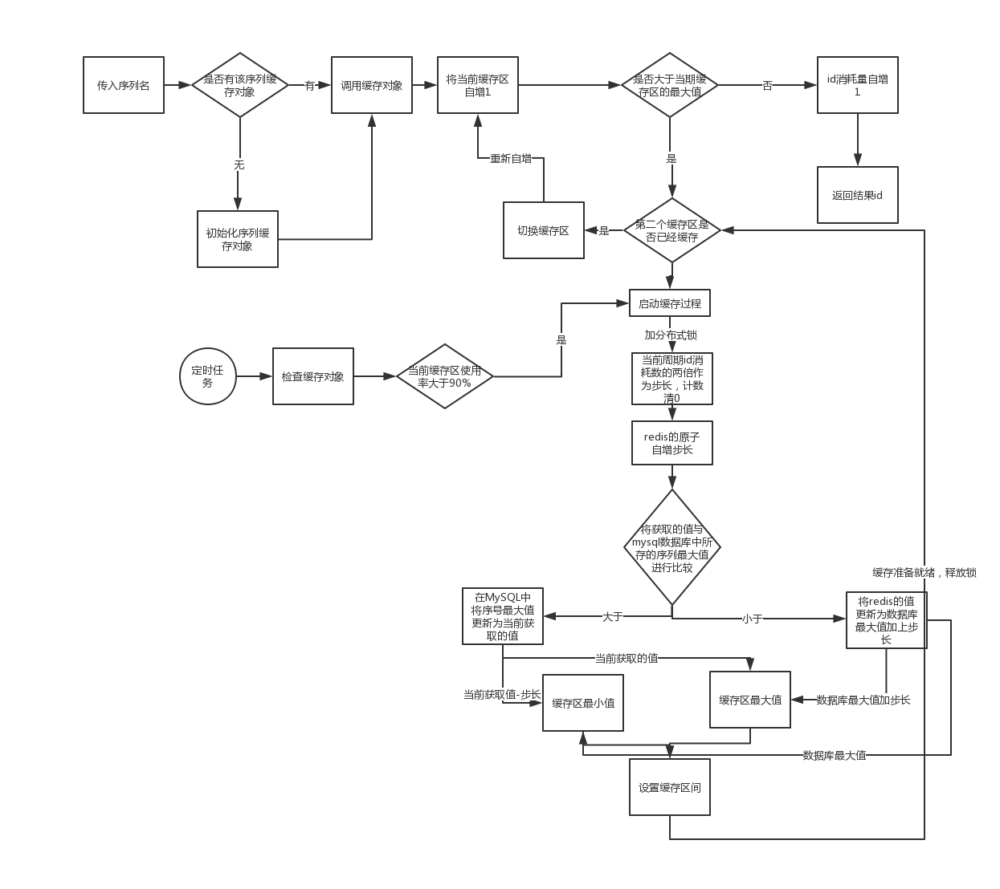

说明
在分布式系统中都涉及到全局序列号的问题，网上分布式id生成的核心思路大概有以下几种
- 基于redis的原子操作，java中spring提供了RedisAtomicLong可进行long型的线程安全操作
- 基于mysql的自增主键
- 基于雪花算法Snowflake
- 基于zookeeper的全局id，curator提供了DistributedAtomicLong可进行long型的线程安全操作
- 基于UUID
本人以前做过一个java实现的基于Snowflake实现的全局id生成器，当时需求是生成20位的id，主要解决了机器启动时机器id的无法确定的问题，依赖zookeeper。github地址,在了解到更多的分布式id生成方案后，对分布式id生成又有了新的思路。开始
该文的源代码地址：github地址
该文将基于redis的原子操作，借鉴美团的双缓存策略来实现分布式id生成，以及网上各类的分布式id思路实现了一种分布式id生成实现。该实现有以下特点
- 满足分布式id的需求
- 通过双buffer策略减少与redis的交互，主要目的是减少与redis交互的io时间。并可实时自动调整缓存的长度。
- 通过mysql持久化序列号实现redis的可切换。
- 可根据不同序列名取不同的全局id，实现序列的分类。
- 可多节点部署提高整体性能以及可用性：多节点部署每个节点都会有各自的双buffer，会造成id不是严格的递增，但整体的id不会出现重复，并且呈现趋势递增。
- 可将redis换成zookeeper等其它的原子性的long操作。
该实现主要有三个类或接口AtomicLongBufferRepository、AtomicLongBuffer以及GlobalAtomicLongService，下面具体说明各个实现思路以及使用方法。AtomicLongBufferRepository
该类是用于实现根据序列名对外提供全局的id。属性说明
该类有以下属性 private static final String DEFAULT_SEQ_NAME = "DEFAULT_WHOLE_SEQUENCE_NAME";默认的序列名private final Map<String, AtomicLongBuffer> pool = new ConcurrentHashMap<>(16);通过线程安全的ConcurrentHashMap来保存不同序列的缓存private SequenceMapper mapper;传给AtomicLongBuffer使用方法说明
public long incrementAndGet(String sequenceName)对外提供的通过序列名获取序列号public long incrementAndGet()对外提供的默认序列名的序列号，实际上调用public long incrementAndGet(String sequenceName)方法private AtomicLongBuffer createSequenceIfNotExistAndGet (String sequenceName)内部使用，获取对应序列号的缓存实现类public Map<String, AtomicLongBuffer> getPool()获取存储序列的map，主要用于定时检查各个序列缓存使用情况，在缓存快使用完成后进行下一次缓存AtomicLongBuffer
该类主要实现的是双buffer策略，通过双buffer来减少io时间提升性能。属性说明
private final Object lock = new Object();类中使用的锁对象private String sequenceName;当前序列名protected AtomicLong[] buffer =new AtomicLong[]{new AtomicLong(0),new AtomicLong(0)};缓存对象，每次从这里取idprotected long[] maxIds = new long[]{0,0};当前缓存阶段id的最大值protected int[] steps = new int[]{10,10};缓存的步长private AtomicBoolean isPerparing = new AtomicBoolean(false);是否正在进行缓存private AtomicBoolean[] isOks = new AtomicBoolean []{new AtomicBoolean(false),new AtomicBoolean(false)}两个缓存区的状态private GlobalAtomicLongService atomicLongService;缓存区的值的获取对象private int currentIndex=0;当前所在的缓存区private LongAdder count = new LongAdder();计数器，统计缓存周期内的id消耗量，用于计算下一次缓存步长private SequenceMapper mapper;mybatis的一个mapper，用于查询、更新序列号信息方法说明
public long incrementAndGet()通过缓存区获取全局id。public void validateStatus()校验当前缓存区id使用情况，剩余10%时开始缓存另外一个缓存区private void startPerpareProgress(int index)开始缓存指定缓存区private void storeMaxSequence(long max)持久化序列号信息到数据库private void completePrepare(int index)缓存过程结束GlobalAtomicLongService
方法说明
long addAndGet(long addValue);抽象了全局id缓存的获取接口，可将redis实现替换成zookeeper实现获mysql实现void set(long newValue);抽象了更新全局id的接口流程图
整个分布式id的获取以及生成的流程图如下
